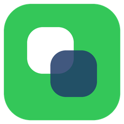

操作性改善アプリ
Windows のパソコン操作を少し楽にする、小さなアプリ。使いたい機能だけをスイッチでオンにして使います。
Windows 10 / 11 用
できること
モニター入れ替え左Ctrl を素早く2回で、左右の画面のウィンドウを入れ替え
かんたんスクショPrintScreen を押すだけで、直感的にスクショ
後ろを触る（透かし）無変換 を押している間、ウィンドウが透けて後ろを触れる
操作マニュアル自動作成右Ctrl（または 右Alt）を2回で記録。写真入りの手順書ができる
入れ方
- 「ダウンロード」を押す
- ダウンロードしたファイルを開く
「Windows によって PC が保護されました」と出ることがあります。「詳細情報」→「実行」で進めてください。
次からはデスクトップの「操作性改善アプリ」から開けます。